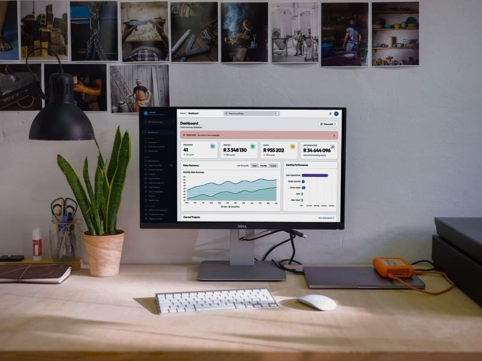
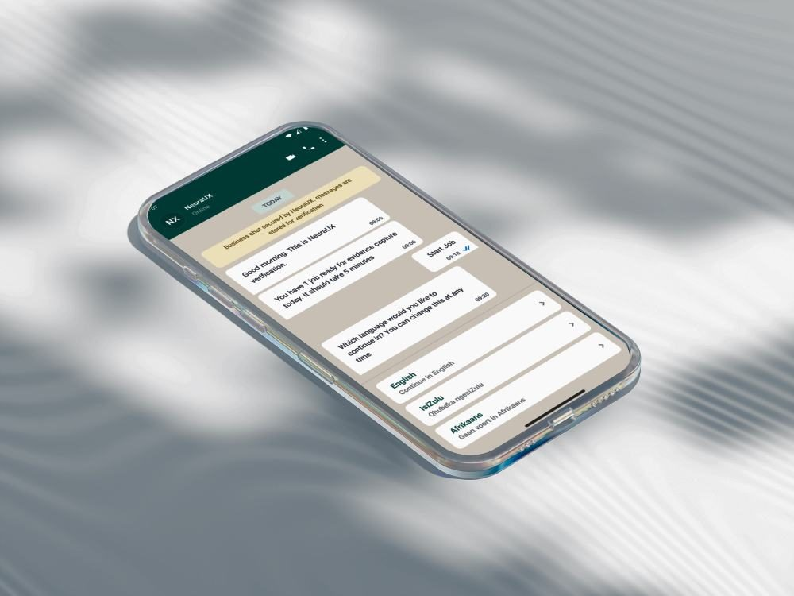
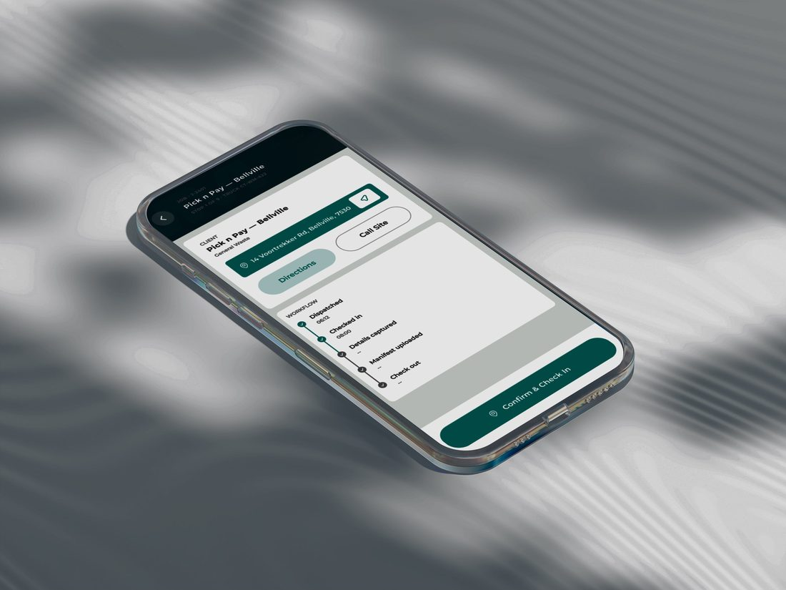
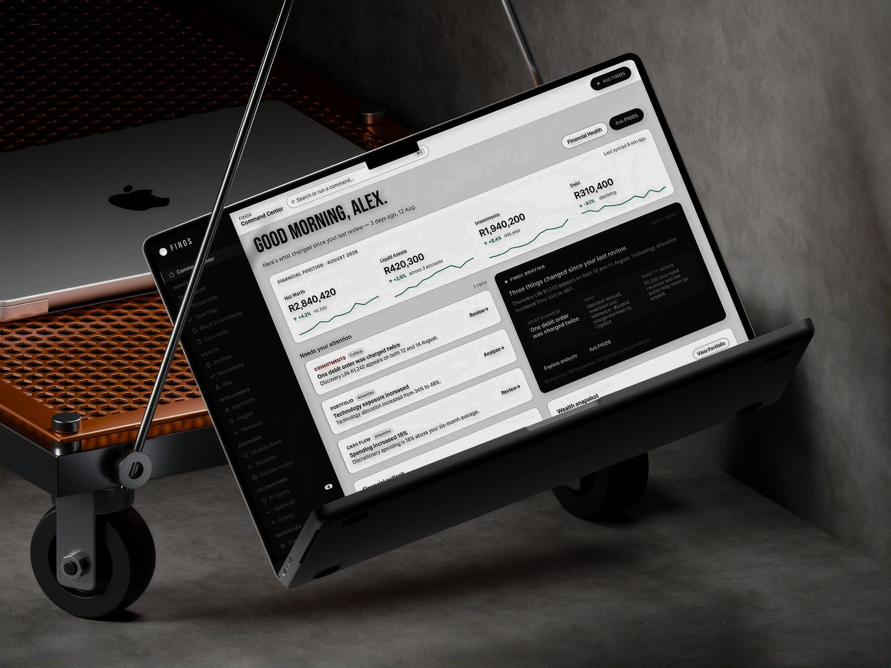
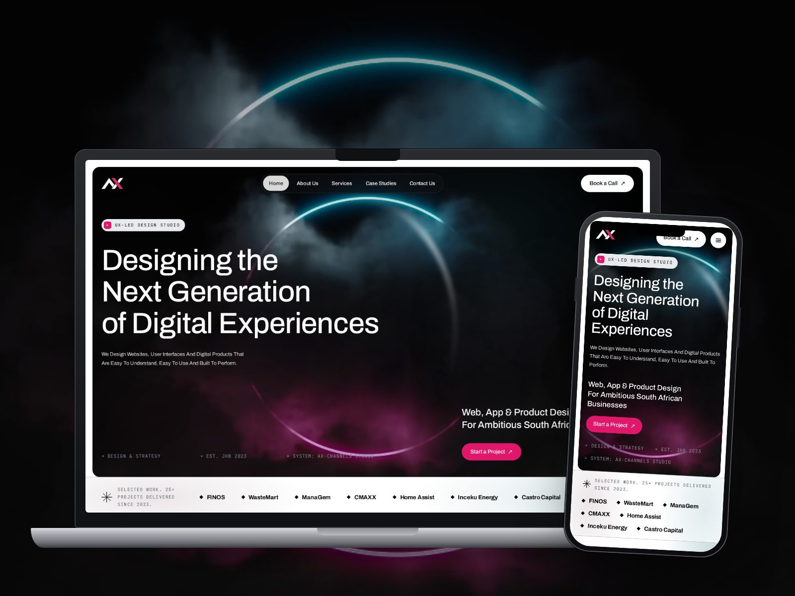

Product Design & AI UI/UX
Product Designer | AI UI/UX
I design digital products and intelligent user experiences across websites, mobile apps and SaaS systems, making complex workflows easier to understand and use.
Johannesburg, SA
What I Design
Four connected capabilities within one product design practice.
AI UX is a capability, not a separate practice. It applies across websites, mobile apps and SaaS platforms — confidence states people can read, outputs that explain themselves, review gates, and a person who stays accountable for the result.
Case Studies
Products built around real problems.

Client work · Approved for implementation
Enterprise Product Design · SaaS · Workflow Design
An ERP That Onboards Itself
Lead designer on a business management platform and its AI-assisted onboarding product, which turns client documents into reviewed, trusted data behind two human approval gates.
RoleLead UI/UX Designer

Client work · GEMIS pilot
AI UX · Conversational Design · Service Design
AI Governance For Claims Verification
A verification journey for an insurance client, run as a GEMIS pilot: a WhatsApp front end over reviewer, operations and costing dashboards, with uncertainty made readable.
RoleAI UX Strategist & Conversation Designer

Client work · Interactive prototype
Mobile Product Design · Operational UX · Workflow Design
Field Workflows For Waste Collection
A driver and collection app for a waste-services client: jobs, evidence capture, verification and end-of-day reconciliation in one workflow, built out as a 29-screen prototype.
RoleProduct Designer

Self-initiated concept
AI UX · Product Strategy · SaaS
An AI Operating System For CFOs
A concept exploring how visible reasoning, stated assumptions and readable confidence let an AI support a consequential financial decision while a person stays accountable for it.
RoleProduct Designer · UX Strategist · AI UX
Client work · Live
Website Design · UX Strategy · Build
Connectivity, Made Clear
Redesigning the CMAXX digital experience to make its connectivity offering easier to understand, with a stronger path from discovery to enquiry.
RoleUI/UX Designer, at AX-Channels

Client work · Pre-launch
Website Design · UX Strategy · Design System
A Studio, Designed As A Product
Repositioning AX-Channels from a web-design service into a UX-led digital studio — strategy, information architecture, a design system and an AI-assisted build across eight responsive pages.
RoleProduct Designer / UX Strategist
| Project | Specialism | Role | Open |
|---|---|---|---|
| An ERP That Onboards Itself | SaaS dashboardAI UI/UX | Lead UI/UX Designer | |
| AI Governance For Claims Verification | SaaS dashboardAI UI/UX | AI UX Strategist | |
| Field Workflows For Waste Collection | Mobile app | Product Designer | |
| An AI Operating System For CFOs | SaaS dashboardAI UI/UX | Product Designer · AI UX | |
| Connectivity, Made Clear | Website | UI/UX Designer | |
| A Studio, Designed As A Product | WebsiteUX strategy | Product Designer / UX Strategist | |
| Designed To Be Used | Website | Design & front-end |
No case studies match that search.
Design Process
Four stages, in order — from how the work happens today to something developers can build.
Understand the current state
Workflow analysis, existing process documentation and current- and future-state journeys — plus a stakeholder map showing where trust and handoffs actually break. All of it before the first screen.
Agree it before designing it
Assumptions become decisions logged against a named business owner, worked through in stakeholder sessions rather than settled on my judgment alone. That register is what the design is built on.
Principles before screens
Design principles first, so the hard calls have something to answer to. Then information architecture, flows, and the states most work skips — empty, offline, low-confidence, error.
Validate, then hand over
Working prototypes put in front of the people who have to use and fund the work, then component specs, tokens and a handoff session — so what ships is what was designed.
Capabilities
The specific practices behind the work, each tied to the project that evidences it.
Product & UX design
- User flows and task journeys Structuring a product around the shape of someone's day instead of a screen inventory. WasteMart · ManaGem
- Information architecture Making an operational system navigable before it has been learned. ManaGem · AX-Channels
- Interaction design Designing the states most work skips — empty, offline, low-confidence, mismatch, error. WasteMart · Claims verification
- Interface design Hierarchy, density and legibility for tools people use all day, or in motion. ManaGem · WasteMart
AI UI/UX
- Confidence and uncertainty states Showing how sure a system is in a way a person can actually judge. ManaGem Take-On · Claims verification
- Human review gates Designing where a system proposes and a person still decides — and is accountable for it. ManaGem Take-On · Claims verification
- Explainable outputs Pairing a recommendation with its reasoning, assumptions, evidence and risks. FINOS · Claims verification
- Reason codes and recovery When the system rejects something, saying why and what to do next. Claims verification
Systems & delivery
- Design systems in Figma Built and maintained a component system used across teams at GEMIS. GEMIS · ManaGem
- Responsive interface design Interfaces that hold from a desktop console to a phone used one-handed. CMAXX · AX-Channels · WasteMart
- Interactive prototypes Complete working flows built to be reviewed by the people who use and fund the work. WasteMart (29 screens) · Claims verification
- Developer handoff Taking work from discovery through to specs a team can build from. GEMIS · AX-Channels
About
I design the parts of a product where the workflow is the hard part.
I'm Sphamandla Xaba, a Product Designer working across UX, UI and AI UX from Johannesburg. Over three years I've designed websites, mobile products and SaaS platforms — taking work from discovery and research through to developer handoff.
Most of what I do sits behind the interface: onboarding that has to earn trust, operational dashboards people live in all day, AI-assisted review where someone still has to be accountable for the result. The screens are the easy part.
My job is to make complexity legible — not to pretend it isn't there.
Contact
Let's design something meaningful.
Open to Product Designer and UI/UX roles, and selected freelance work — across websites, mobile apps, SaaS dashboard systems and AI UX.
Gauteng, South Africa · Open to suitable hybrid and remote opportunities.